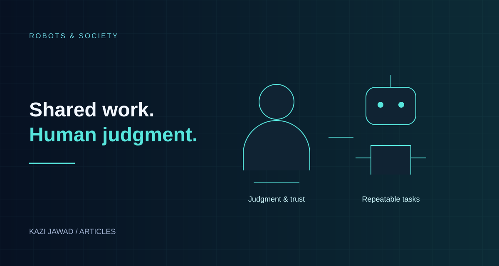

Articles / 02 · Robotics & Society
Will Humans Truly Be Replaced by Robots?
Understanding task automation, changing jobs, and the human role.

In this article
Introduction
Every major technology wave has produced the same fear: this time, machines will take all the work. The loom, the assembly line and the computer all triggered it. Today the fear has two faces: software AI that does thinking work, and physical robots, now including humanoid ones, that do manual work.
The honest answer to "Will humans be replaced?" is more nuanced than either "yes, completely" or "no, never." This article separates the hype from the evidence, looks at what robots and AI can and cannot do in 2026, and explains which jobs are most at risk, which are safest, and what that means for ordinary people.
1. First, Clarify the Question
"Replaced" can mean four very different things:
- Task replacement: a machine does part of what you do (most likely and already happening).
- Job replacement: a machine does nearly everything one specific job requires.
- Occupation shrinkage: an entire profession needs far fewer people.
- Human obsolescence: humans are no longer needed for economic work at all.
Evidence in 2026 strongly supports (1), partly supports (2) and (3) in specific fields, and gives little support to (4) in any near-term timeframe.
2. What Robots Can Actually Do in 2026
2.1 Humanoids have left the lab, but only just
Humanoid robots had entered commercial operations before 2026. GXO and Agility Robotics announced a multi-year commercial deployment of Digit in June 2024, following a 2023 pilot. By 2026, additional manufacturers were announcing trials and staged rollouts, while deployments remained focused on narrow tasks. GXO’s commercial deployment announcement.
Examples of announced programmes include:
- Schaeffler and Humanoid: In May 2026, Humanoid announced a binding, phased agreement targeting a four-digit number of wheeled humanoid robots across Schaeffler’s facilities by 2032. The first phase was scheduled for December 2026 through June 2027 at two German sites, beginning with box handling, integration testing, and validation. These are announced plans, not completed fleet deployments. Company announcement.
- Other factory pilots: Several makers, including Figure, Tesla (Optimus), Boston Dynamics (Atlas) and Agility, have been reported in factory or warehouse trials. Tesla has described mass production of its Optimus robot as a 2027 target.
- Airports: JAL Ground Service and GMO AI & Robotics announced a demonstration programme starting in May 2026 and planned through 2028. It begins with identifying suitable tasks and testing safe operation; baggage and cargo handling and cabin cleaning are among the areas being studied. JAL announcement.
- China: reportedly deploying humanoids into factories, logistics hubs and stores through government-backed centers to gather real-world training data.
2.2 The pattern: structured, repetitive, "dull, dirty, dangerous"
Reviews of 2026 deployments consistently describe humanoid robots doing tote handling, parts transfer, bin picking, kitting and simple assembly support. These are structured environments that are forgiving of robot limitations. Notably absent at scale: hospitals, restaurants, schools, retail floors and ordinary homes. Reports describe today's robots as clumsy, limited and expensive.
Leasing models (Robots-as-a-Service) are emerging, with some automotive firms preferring to lease rather than buy, a sign that companies still treat the technology as an experiment to be proven.
2.3 Traditional industrial robots are not new
Industrial robots have been used for decades and are designed to be reprogrammable and adaptable to different applications. They are often deployed in tightly configured workflows. Recent AI advances aim to make perception, task learning, and adaptation more flexible, but dependable general-purpose operation remains an ambitious goal. International Federation of Robotics definition.
3. Why "Total Replacement" Is Harder Than It Looks
3.1 The physical world is messy
Software can often be distributed more cheaply than physical hardware, although running AI still requires computing resources. Robots must be built, powered, maintained and repaired. Human hands, balance and sensing are extraordinarily versatile; matching them in a cheap, durable machine is still unsolved at scale. Tasks that feel trivial to people (folding laundry, handling a delicate object, working in a cluttered kitchen) remain hard for robots.
3.2 Economics decides, not capability alone
A robot may be able to do a task and still not be worth buying. The comparison is cost per hour, uptime, maintenance, training and integration versus human wages. In low-wage economies, human labor may stay cheaper for much longer than in high-wage ones, which could mean automation arrives unevenly across countries.
3.3 Reliability, safety and liability
A robot working near people needs strong safety standards. Industry commentary notes that safety frameworks are only now becoming more standardized. When something goes wrong, who is liable: manufacturer, operator, software vendor?
3.4 Human preference
Many roles involve trust, empathy, authority or presence: nurses, teachers, caregivers, judges, religious leaders, therapists. Even if a machine could do part of the task, people often want a person.
4. The Bigger Near-Term Disruption Is Software, Not Robots
Robots grab headlines, but the faster change is happening in cognitive work done by AI software, because software can be distributed more quickly than fleets of physical machines, even though computation and integration still carry costs.
- Analysts rate call-center work, basic bookkeeping and routine code writing as highly exposed.
- Reports suggest AI exposure is often greater in higher-paid information jobs than in many low-wage manual jobs.
- Geoffrey Hinton and others have warned about a "jobless boom" in which output rises while entry-level hiring falls. The WEF 2026 discussion also suggested mid-level roles could face significant pressure, not only junior ones.
In other words, many office workers may feel the impact before many manual workers do.
5. What the Numbers Say
Labor-market forecasts vary widely, and many are produced by organizations with a stake in the story. The most widely cited source is the World Economic Forum:
| Indicator | Figure | Notes |
|---|---|---|
| Jobs displaced during 2025–2030 (multiple economic trends) | ~92 million | WEF Future of Jobs 2025; not AI alone |
| Jobs created by 2030 (all trends) | ~170 million | Net gain ~78 million |
| Employers planning to cut staff where AI can automate tasks | 41% | WEF 2025 survey |
| Employers planning to upskill workers in response to AI | 77% | WEF 2025 survey |
| Executives expecting AI to displace existing jobs / create new jobs | 54% vs. 24% | WEF Four Futures report (2025/26) |
Two lessons:
- Net job numbers can be positive while individuals still suffer. A new job created in another field, city or skill level does not help a displaced worker unless they can move into it.
- The measures answer different questions. Executive expectations about AI and projections covering several economic trends are not directly comparable measures of net employment.
6. Who Is Most and Least at Risk?
Higher exposure (tasks that are routine, rule-based, digital or repetitive)
- Customer-support scripts and call centers
- Data entry and basic bookkeeping
- Routine translation, transcription and content drafting
- Entry-level coding and testing
- Warehouse picking, packing and sorting
- Repetitive assembly and material handling
Medium exposure (parts will be automated, the role will change)
- Accountants, paralegals, analysts, marketers, designers
- Drivers (depending on regulation and technology timelines)
- Teachers and tutors (AI as assistant, not replacement)
Lower exposure (physical dexterity in unpredictable settings, deep human trust, or complex judgment)
- Electricians, plumbers, mechanics and other skilled trades
- Nurses, caregivers, therapists, social workers
- Leaders, negotiators, entrepreneurs
- Creative directors and people with strong personal brands
- Safety-critical roles needing accountability
Note that "lower exposure" does not mean "no change." Almost every job will include some AI-assisted tasks.
7. History's Lesson, and Its Limits
Past revolutions destroyed specific jobs but created new ones: weavers gave way to factory operators; typists gave way to office software users; the internet created whole professions that did not exist before.
But history is not a guarantee. Differences this time:
- AI targets general cognitive ability, not one narrow task, so there is no obvious "safe" skill to retreat to.
- The speed may be faster than education systems can adapt.
- Gains may concentrate among owners of capital and compute.
The fair conclusion: history gives grounds for cautious optimism about total employment, and no grounds for complacency about transitions.
8. An Illustrative Timeline (Not a Prediction)
| Period | One possible path |
|---|---|
| 2026–2028 | Humanoid pilots in factories/warehouses; AI agents spreading in office work; entry-level hiring pressure; rising demand for AI-skilled workers |
| 2029–2032 | Larger robot fleets in logistics and manufacturing in wealthy economies; many jobs redesigned around human-AI teams; policy debates over retraining and income support intensify |
| 2033+ | Highly uncertain; depends on robot cost, AI reliability, energy and policy choices |
This timeline is an illustrative way to think about a possible transition, not a forecast validated by the cited employment data. Treat any single prediction, optimistic or alarmist, with caution.
9. How to Stay Valuable
- Become a "multiplier," not a competitor. Learn to use AI so that one person does the work of several.
- Combine skills. Domain knowledge plus AI fluency plus communication is hard to replace.
- Move toward judgment and responsibility. Machines can draft; humans decide, are accountable and build trust.
- Consider skilled, hands-on work that is physically complex and varies from site to site.
- Keep learning continuously. WEF’s 2025 report projects that 59 out of every 100 workers will require upskilling or reskilling by 2030.
- Build a financial cushion and a network. Transitions are easier with savings, contacts and a visible record of your work.
What governments and employers should do
- Fund large-scale, affordable reskilling, especially for mid-career workers.
- Update education toward critical thinking, problem solving and AI literacy.
- Consider transition support (unemployment insurance reform, wage insurance, portable benefits).
- Require transparency and safety standards for workplace robots and AI.
Conclusion
Will humans truly be replaced by robots? Not wholesale, and not soon. What is far more likely is that tasks get replaced, jobs get redesigned, and some occupations shrink while new ones emerge. In 2026, robots are doing narrow, structured work in factories and warehouses, and AI software is reshaping office work faster than physical machines are reshaping manual work.
The real risk is not that humans become unnecessary, but that the transition is handled badly: people left without training, gains concentrated in few hands, and policy that moves slower than technology. That outcome is a choice, not a destiny, and individuals, companies and governments all have a part in shaping it.
Sources and Notes
Deployment announcements describe plans and trials, which can change. WEF employment figures are projections from employer surveys, not a count of jobs already lost. The 170 million jobs created and 92 million displaced estimates cover multiple economic trends through 2030, not AI alone.
- GXO and Agility: commercial Digit deployment, June 2024.
- Humanoid: phased deployment agreement with Schaeffler.
- JAL: airport humanoid demonstration programme.
- IFR: definition of industrial robots.
- WEF: Future of Jobs Report 2025 headline findings.
- WEF: AI and job-market scenarios.
The occupation groupings and illustrative timeline are qualitative discussion aids. Exposure to automation varies with the actual tasks, workplace, country, and implementation; it is not a guarantee that a particular person will lose or retain a job.